也紀念我們永遠的朋友 李士傑先生（Shih-Chieh Ilya Li）。
用自由軟體 Scribus 來輸出文件（4）- 製作模板並轉為 PDF 輸出
要製作精美的海報、手冊、月曆等，透過多數軟體仍然都需要花上一段時間來完成。辛苦做好的成品如果只用一次豈不是太可惜了。本次要介紹如何將完成的作品製作成模板，以方便多次套用，並將 Scribus 的文件轉為 PDF 格式，以利印刷或是散布給他人觀賞。
模版
我們可以從別人已經做好的模版中挑選自己想要的樣式，利用現成的模版做修改，省下製作的時間，若找不到自己屬意的樣式，也可以自己製作一個模版，之後若需要類似版型時就可以直接拿來使用了。
套用現有模版：
套用模版可以從軟體中選擇，或是到官方網站去下載模版來編輯。首先，如何從 Scribus 中叫出別人已經做好的模版呢？請至功能表上的【檔案】選擇【從模版新建】。
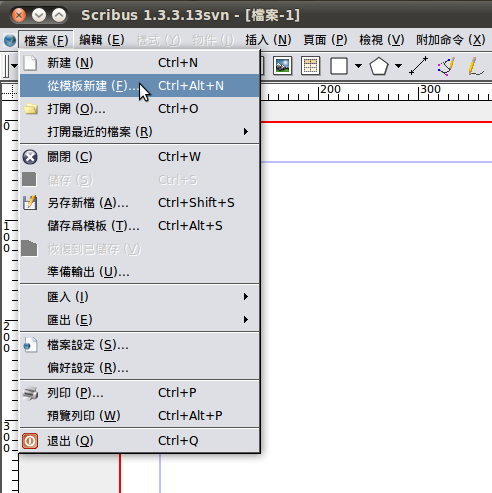
▲圖 1
你可以選擇依照分類選擇你要套用的模版。
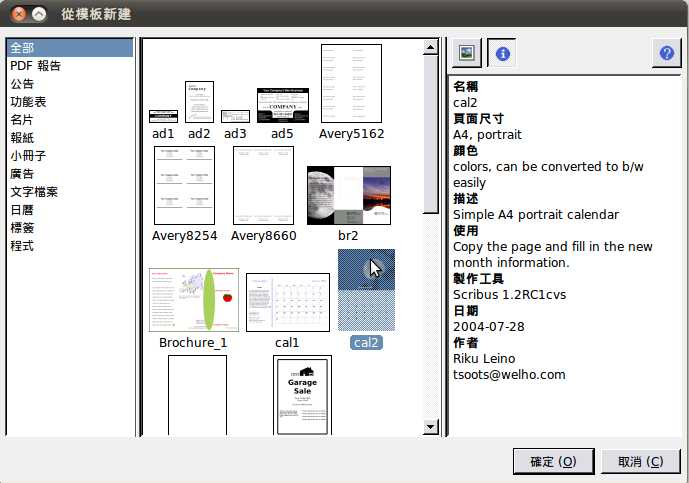
▲圖 2
如果對軟體內附有的模版不滿意，可以到下面這個網站去尋找符合自己需求的模版，下載別人分享出來的模版。
網站連結：https://scribusstuff.org/
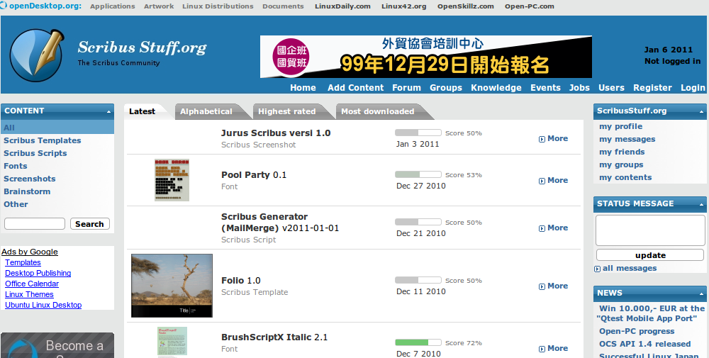
▲圖 3
到這個網站後，在左邊欄位中選擇「Scribus Templates」的選項，就可以看到中間出現許多熱心網友們貢獻的模版。
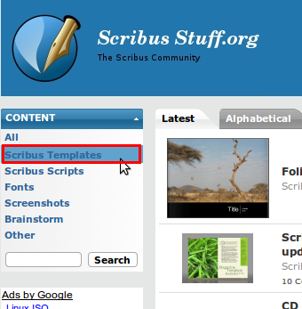
▲圖 4
選好中意的模版後，點進去進行下載。
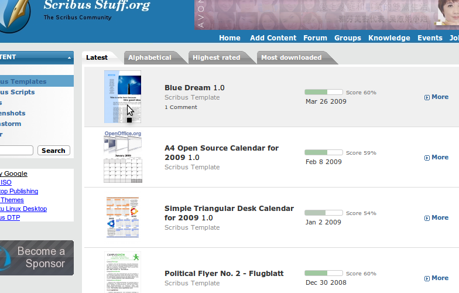
▲圖 5
按下「download」。
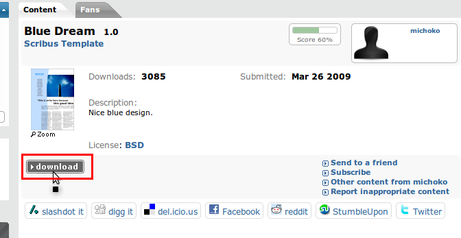
▲圖 6
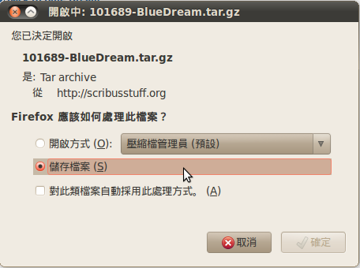
▲圖 7
下載完儲存好以後，打開文件會看到很多附屬於這個模版的檔案，選擇其中的 sla 檔就可以開啟 scribus 模版進行編輯。
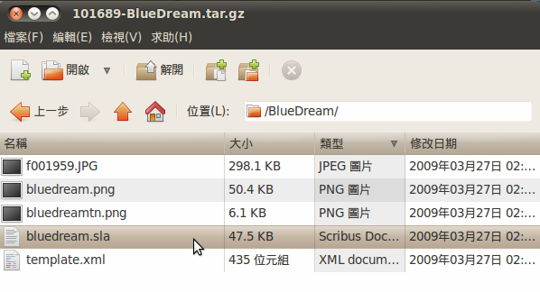
▲圖 8
無論是從網站下載或是從軟體中找到模版，開啟模版時會跳出「字體替代視窗」。因為每個人電腦裡有的字型不盡相同，因此會出現這個視窗問你想要將這份模版中所用到的、但你沒有的字型轉換成哪些字型。
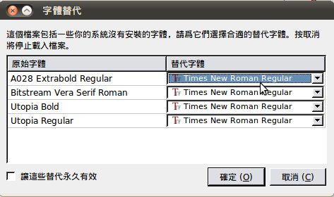
▲圖 9
選好字型後就可以開始編輯了。有的模版檔案在製作時有鎖定一些物件，只要點滑鼠右鍵，按一下【鎖定】讓前面的勾勾消失就解除鎖定了。模版上的所有元素不論是底圖或是文字都可以隨意改變，不會被侷限。
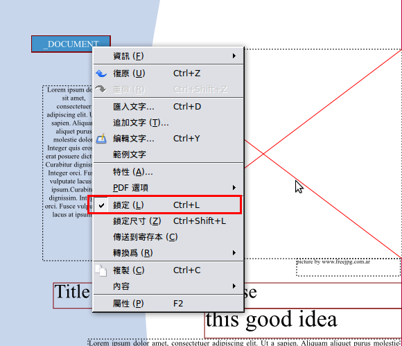
▲圖 10
{kind=link}
自己製作模版：
當找不到適合的模版時，就只好自己做一個然後儲存成模版檔案，以便往後持續使用。做好的檔案可以從【檔案】選擇【儲存為模版】。
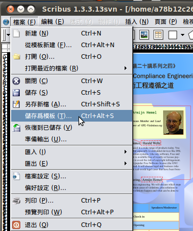
▲圖 11
選擇模版檔案要存放的位置。儲存成模版後，所有在檔案裡用到的圖片檔都會跟著連同一起儲存，所以最好是再開一個資料夾以方便管理檔案。
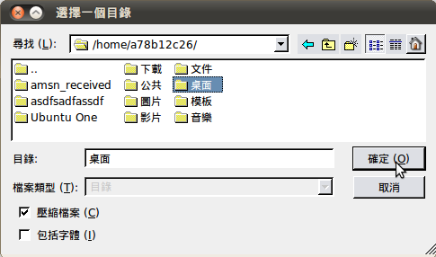
▲圖 12
選好存放位置後會出現一個視窗，此視窗可以詳細紀錄此模版的相關資料，這樣就存成新的模版了。
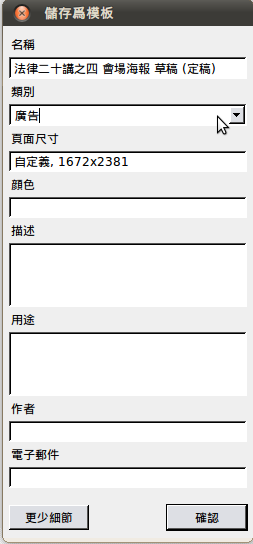
▲圖 13
使用別人做好的模版，可以省下不少時間；或者是把自己辛苦製作的檔案存成模版，未來做類似檔案只需花少少的時間就能製作完畢。別忘了分享自己製作的模版檔案，讓其他使用 Scribus 的使用者能夠觀摩噢。
PDF 輸出
由於 Scribus 採用的格式是 sla 檔，並不是常見的檔案格式，我們必須轉成 PDF 檔才能交付印刷或是分享給週遭的朋友。以下將說明 Scribus 的 PDF 輸出功能。
按〔儲存為 PDF〕 按鈕。
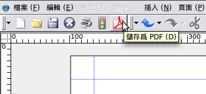
▲圖 14
在進入「PDF 輸出」視窗前，先會跳出「印前檢驗器」。「印前檢驗器」會完整的檢查文件當中的所有頁面中的物件，從主頁開始，各個文件框以及圖片框。最常出現的問題像是影像解析度過低，或者是找不到圖片存放的路徑，而使得圖片框是空白的。「印前檢驗器」中。在這邊可以逐一確認各頁面中潛在的問題數量多寡，以紅綠燈方式表示，綠燈表示沒問題，黃燈是有小錯誤，紅燈是嚴重錯誤。可以直接點選黃燈或紅燈的項目，會直接跳至該項目，檢示錯誤發生的地方，省下逐步找尋錯誤的時間，立即將錯誤處修政。假如瀏覽過後認為並不影響輸出的成品，則可按〔忽略錯誤〕跳至下個步驟。
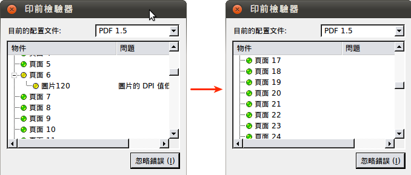
▲圖 15
接下來會出現「儲存為 PDF」的選單，這裡我們將進一步說明各頁籤所提供的功能。
「輸出到檔案」顯示檔案儲存位置以及檔案名稱，按〔更改〕可以變更儲存目錄以及存檔檔名。「逐頁輸出單個檔案」，可使每頁輸出成個別檔案。
一般頁籤：
- 「輸出範圍」可以選擇整份 Scribus 文件輸出成 PDF 檔，或者是選擇範圍內某幾頁輸出。
- 「旋轉」則可以選擇將輸出的文件旋轉 0⁰、 90⁰、 180⁰、 270⁰。
- 「檔案選項」可以自行選欲出輸出之 PDF 的相容格式 (PDF 1.3, PDF 1.4, PDF 1.5)，以及裝訂邊要放在左邊或者是右邊。
- 「圖片壓縮方式」可以選擇圖片壓縮方式以及壓縮的品質。
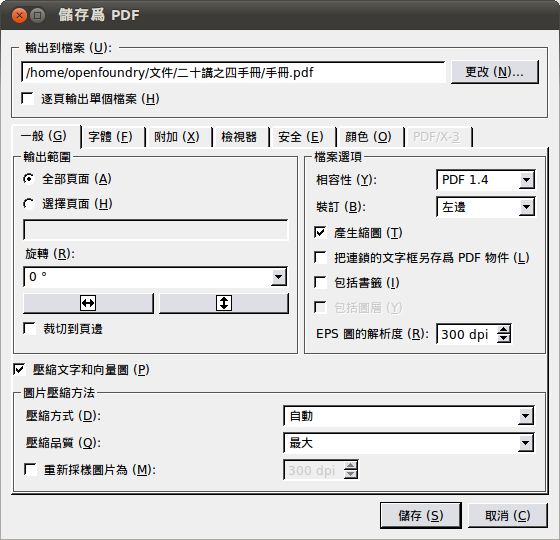
▲一般頁籤
字體頁籤：
- 「可用字體」為檔案中所有使用到的字體。
- 「要嵌入的字體」可在「可用字體」中選取欲使用的字型。
- 〔Embed All〕則可以一次將所有「可用字體」的字型全部內嵌。
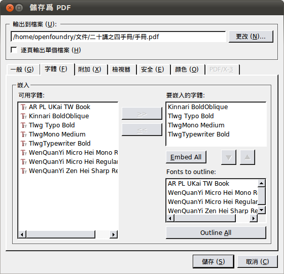
▲字體頁籤
附加頁籤：
- 「啓用報告效果」可將 PDF 檔以簡報型式播放。
- 「特效」可自行挑選欲呈現之效果；可個別調整每一頁面之特效模式，也可以選擇全部套用。
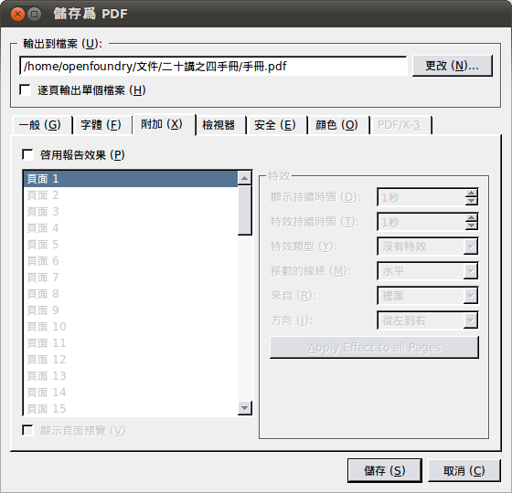
▲附加頁籤
檢視器頁籤：
- 「文件樣式」可依瀏覽習慣設定頁面間的呈現方式。
- 「視覺外觀」則是輸出的 PDF 文件在檔案管理員中的顯示圖標示，可以選擇系統中預設的 PDF 圖示，或者以縮圖的方式顯示 。
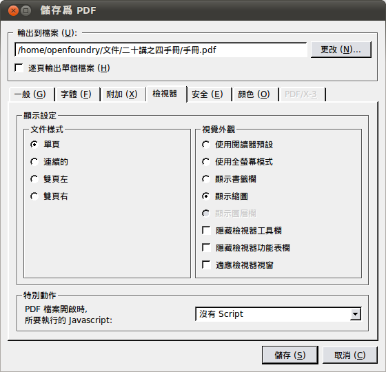
▲檢視器頁籤
安全頁籤：
- 「使用加密」可以選擇是否對輸出後的 PDF 檔加上密碼保護：分為所有人的密碼（可以修改內文）以及使用者密碼（可以觀看文件）。
- 「設定」為允許開啟檔案者能進行的動作，例如：列印檔案、更改檔案、複製文字和圖片與添加注釋和表單域。
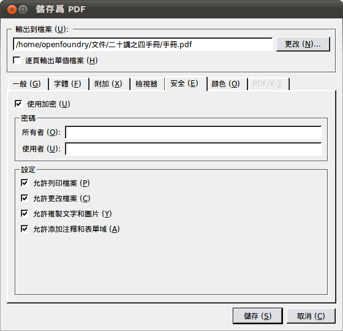
▲安全頁籤
顏色頁籤：
- 「一般」設定中可選擇輸出此檔案的用途，以避免產生色差之疑慮。
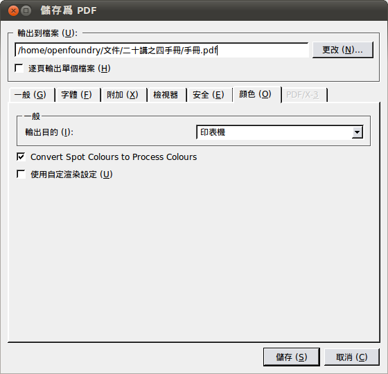
▲顏色頁籤
所有設定完成後點選「儲存」，將檔案轉成 PDF 檔。此時，若製作過程中使用到高解析度的圖片，會增加輸出的時間。
「儲存 PDF」視窗，顯示輸出的進度。
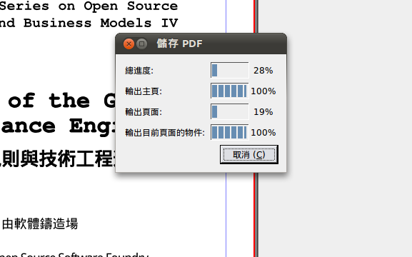
▲顯示輸出的進度
手冊輸出成 PDF 檔完成了！
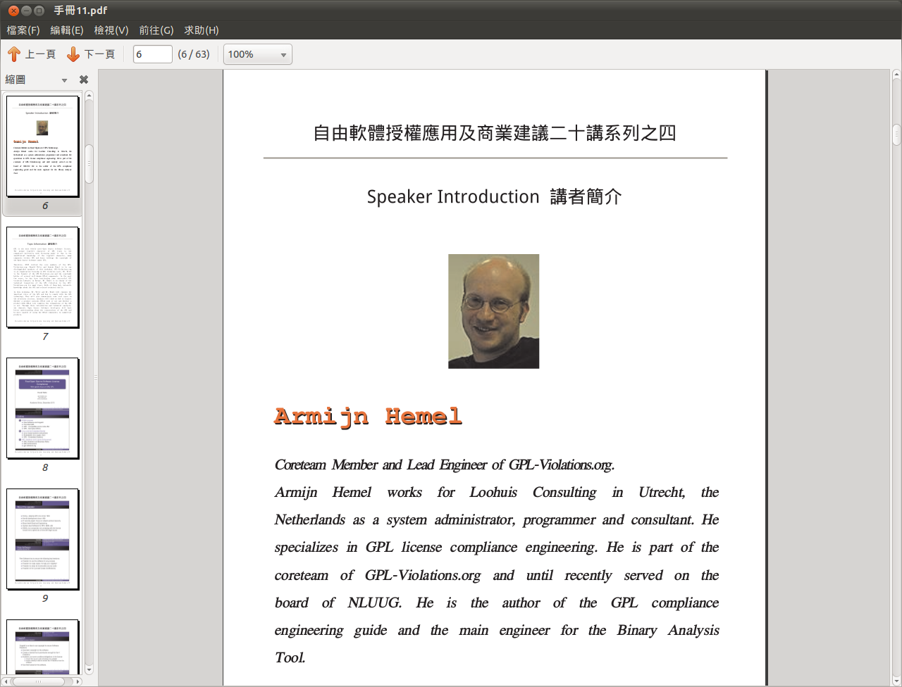
▲圖 16
有了 PDF 檔之後，要分享給別人觀賞或是請廠商輸出成手冊都很方便。Scribus 輸出成 PDF 的這項功能是不是很實用呢？
結論
Scribus 在輸出方面有加密、鎖住之類的功能，不輕易讓其他人複製檔案中的文字及圖片，對於使用者隱私及安全上有所保護。模版功能則方便之後要做類似檔案時使用，著重在內容的修改，是不是很方便且省時省事啊？對使用者來說是套嚴謹且好用的排版軟體，大家一起來學吧！
您也許有興趣閱讀以下文章:
- 用自由軟體 Scribus 來輸出文件（5）- 文字應用 - 2011-02-21
- 用自由軟體 Scribus 來輸出文件（3）-製作活動海報及手冊 - 2010-12-13
- 用自由軟體 Scribus 來輸出文件（2）-製作大富翁棋盤 - 2010-11-04
- 用自由軟體 Scribus 來輸出文件（1）-基本操作 - 2010-10-11
專欄總覽


E-Mail：contact@openfoundry.org Address：台北市南港區研究院路2段128號 中央研究院資訊科學研究所 . 隱私權條款. 使用條款